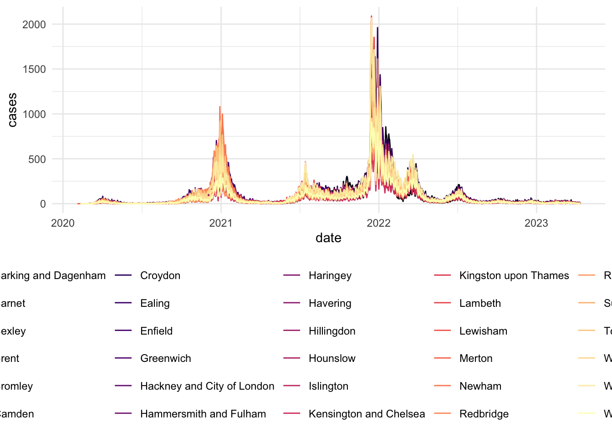
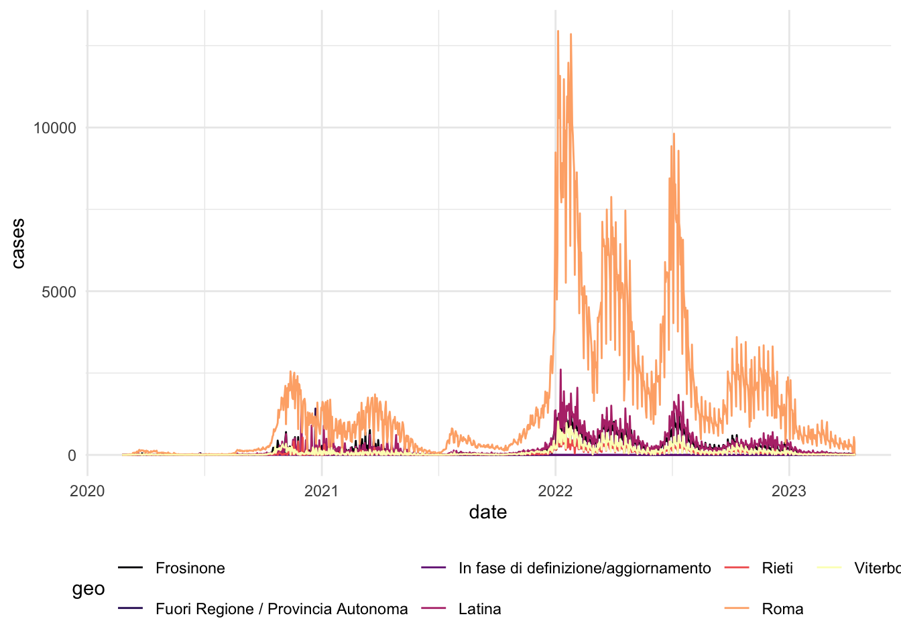
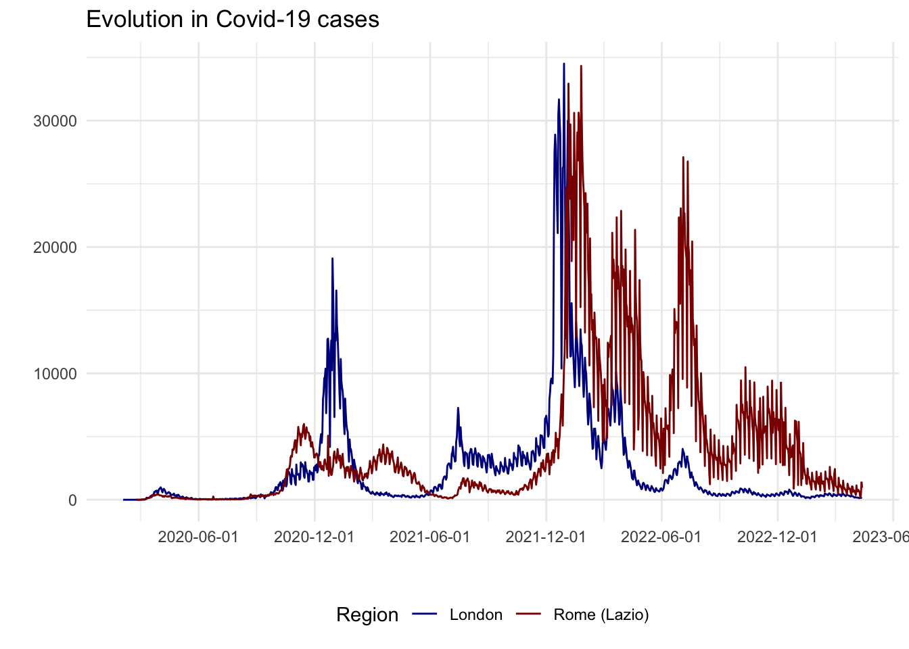
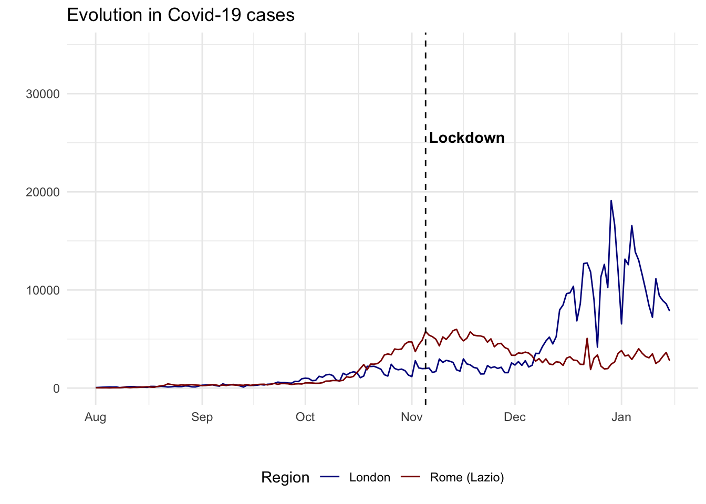
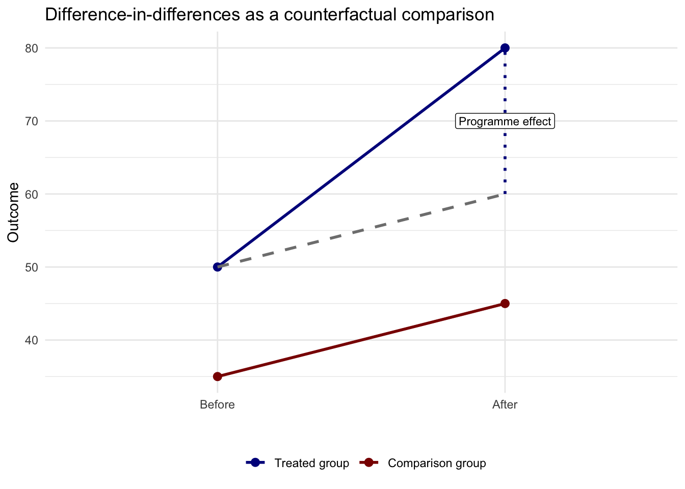
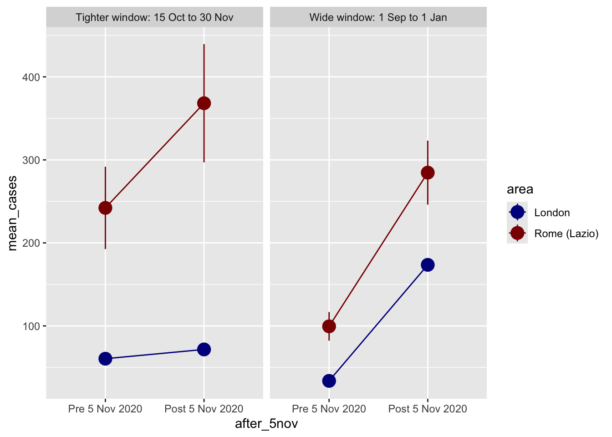
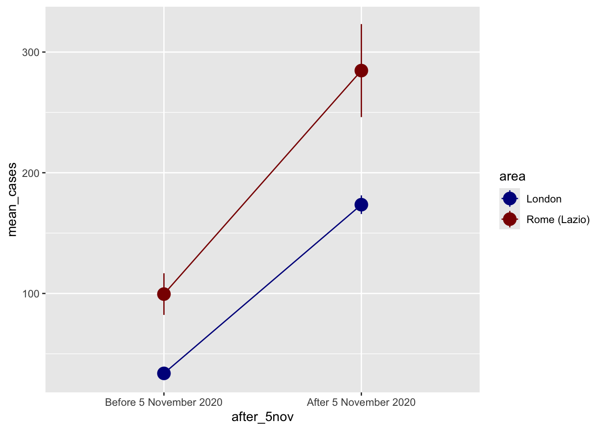
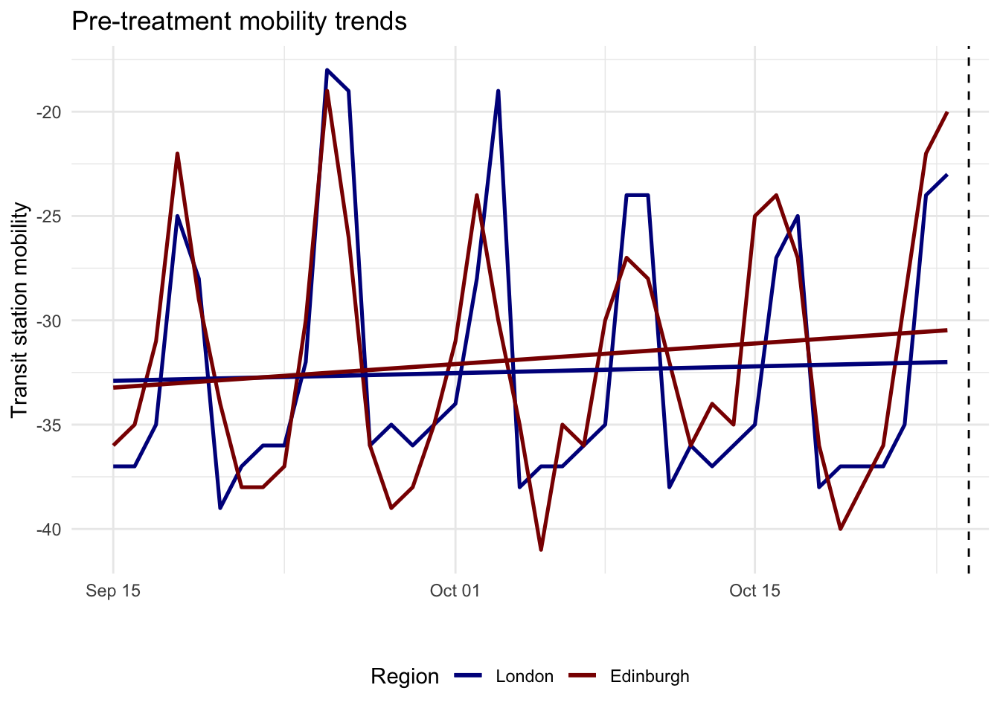
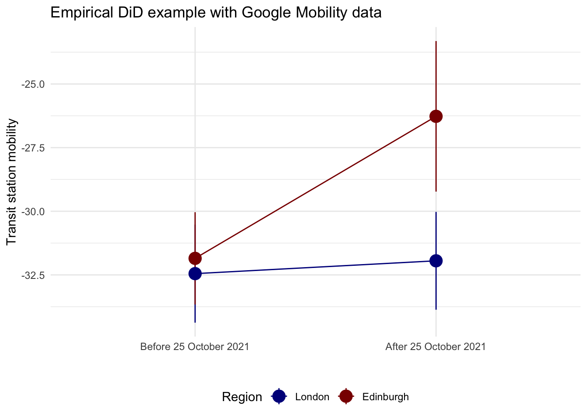

# Data
library(sf)
library(readr)
library(tidyverse)
# Dates and Times
library(lubridate)
# graphs
library(ggplot2)
library(ggthemes)
library(gridExtra)
library(viridis)
library(ggimage)
library(grid)
library(plotly)
# Models
library(modelsummary)
library(broom)
library(gtools)9 Assessing Interventions
Since its outbreak in late 2019, COVID-19 affected millions of people worldwide. Daily case counts quickly became one of the main ways to track the pandemic and to debate the effects of lockdowns and other restrictions. These data helped policymakers monitor the evolution of the disease and make decisions about when to tighten or relax restrictions (Goodman-Bacon and Marcus 2020; Brodeur et al. 2021; Zhou and Kan 2021).
In this chapter, we use difference-in-differences (diff-in-diff or DiD), a widely used quasi-experimental design, to assess treatement, interventions or policy evaluation. We show both the promise and the limits of this approach. The aim is to estimate an effect and to learn how to judge whether a DiD design is credible. We begin with COVID case data and learn some practical lessons about the challenges on policy evaluation and identify different decision areas. We then switch to a small theoretical example to explain the mechanics of the method more clearly. This also prepares us for the assignment, where mobility data may offer a more plausible short-run outcome than recorded cases.
This chapter is based on:
Goodman-Bacon, Andrew, and Jan Marcus. “Using difference-in-differences to identify causal effects of COVID-19 policies.” (2020)
Andrew Heiss’ chapter on Difference-in-differences
Brodeur, Abel, et al. “COVID-19, lockdowns and well-being: Evidence from Google Trends.” Journal of public economics 193 (2021): 104346.
9.1 Dependencies
9.2 Data
First let’s import the Greater London COVID-19 data:
# import csv
covid_cases_london <- read.csv("data/longitudinal-2/covid_cases_london.csv", header = TRUE)
# check out the variables
colnames(covid_cases_london) [1] "areaType" "areaName"
[3] "areaCode" "date"
[5] "newCasesBySpecimenDate" "cumCasesBySpecimenDate"
[7] "newFirstEpisodesBySpecimenDate" "cumFirstEpisodesBySpecimenDate"
[9] "newReinfectionsBySpecimenDate" "cumReinfectionsBySpecimenDate" Then we do the same for the Lazio area data, which is the Region of the capital of Italy, Rome. We are choosing this region because it did not see sharp peaks in COVID-19 cases during the winter of 2020/2021.
# import csv
covid_cases_lazio <- read.csv("data/longitudinal-2/covid_cases_lazio.csv", header = TRUE)
# check out the variables
colnames(covid_cases_lazio) [1] "data" "stato"
[3] "codice_regione" "denominazione_regione"
[5] "codice_provincia" "denominazione_provincia"
[7] "sigla_provincia" "lat"
[9] "long" "totale_casi" First we need to clean up the data and rename some variables in both dataframes to have 4 variables:
date: year-month-daygeo: geographical regioncases: number of COVID-19 cases that dayarea: Lazio (Rome) or London
# Rename the variables in the Lombardia data frame
covid_cases_lazio_ren <- covid_cases_lazio %>%
rename(date = data , geo = denominazione_provincia, totalcases = totale_casi)
# Group the data by region and calculate total cases for each day (not cumulative cases)
covid_cases_lazio_daily <- covid_cases_lazio_ren %>%
group_by(geo) %>%
mutate(cases = totalcases - lag(totalcases, default = 0)) %>%
select(date, geo, cases) %>%
mutate(area = "Rome (Lazio)") %>%
filter(cases >= 0)
#df_milan <- covid_cases_lombardia_new %>%
# filter(geo == "Milano", new_cases >= 0)
# Rename the variables in the first data frame
covid_cases_london_ren <- covid_cases_london %>%
rename(date = date , geo = areaName, cases = newCasesBySpecimenDate) %>%
select(date, geo, cases) %>%
mutate(area = "London")
# Correct date format
covid_cases_london_ren$date <- as.Date(covid_cases_london_ren$date)
covid_cases_lazio_daily$date <- as.Date(covid_cases_lazio_daily$date)
# Append the renamed data frame to the second data frame
covid_combined <- rbind(covid_cases_london_ren, covid_cases_lazio_daily)
# Add a variable of log of cases
covid_combined <- covid_combined %>%
mutate(log_cases = log(cases))9.3 Data Exploration
Similarly to the previous chapter. Let’s start by eyeballing the data.
# Visualizing Cases in London
covid_cases_1 <- ggplot(data = covid_cases_london_ren, aes(x = date, y = cases, color=geo)) +
geom_line() +
scale_color_viridis(discrete = TRUE, option="magma") +
theme_minimal() +
theme(
legend.position = "bottom")
labs(
x = "",
y = "",
title = "Evolution in Covid-19 cases",
color = "Region"
) +
scale_x_date(date_breaks = "6 months")NULL covid_cases_1
# Visualizing Cases in Lazio (Rome)
covid_cases_2 <- ggplot(data = covid_cases_lazio_daily, aes(x = date, y = cases, color=geo)) +
geom_line() +
scale_color_viridis(discrete = TRUE, option="magma") +
theme_minimal() +
theme(
legend.position = "bottom")
labs(
x = "",
y = "",
title = "Evolution in Covid-19 cases",
color = "Region"
) +
scale_x_date(date_breaks = "6 months")NULLcovid_cases_2
To identify the timing of lockdowns in these different areas and evolution of COVID-19 cases, we can overlap aggregage cases of both regions in a single plot.
# Aggregate the data by region for each day
covid_combined_agg <- aggregate(cases ~ area + date, data = covid_combined, FUN = sum)
# Visualizing aggregated
covid_cases_3 <- ggplot(data = covid_combined_agg, aes(x = date, y = cases, color=area)) +
geom_line() +
scale_color_manual(values=c("darkblue", "darkred")) + # set individual colors for the areas
theme_minimal() +
theme(
legend.position = "bottom"
) +
labs(
x = "",
y = "",
title = "Evolution in Covid-19 cases",
color = "Region"
) +
scale_x_date(date_breaks = "6 months")
covid_cases_3
From an initial look at the data, the 2020/2021 winter period seems interesting as there is a high increase in London cases but not as much as a peak in Lazio cases. In fact, after a quick review of COVID-19 lockdowns, we found that:
- On the 5th of November 2020, the UK Prime Minister announced a second national lockdown, coming into force in England
- On 4 November 2020, Italian Prime Minister Conte also announced a new lockdown. Regions of the country were divided into three zones depending on the severity of the pandemic (not shown on the plot): red, orange and yellow zones. The Lazio region was a yellow zone for the duration of this second lockdown. In yellow zones, the only restrictions included compulsory closing for restaurant and bar activities at 6 PM, and online education for high schools only.
# Usual chart
covid_cases_4 <- ggplot(data = covid_combined_agg, aes(x = date, y = cases, color=area)) +
geom_line() +
scale_color_manual(values=c("darkblue", "darkred")) + # set individual colors for the areas
theme_minimal() +
theme(
legend.position = "bottom"
) +
labs(
x = "",
y = "",
title = "Evolution in Covid-19 cases",
color = "Region"
) +
scale_x_date(limit=c(as.Date("2020-08-01"), as.Date("2021-01-15"))) +
geom_vline(xintercept=as.numeric(as.Date("2020-11-05")), linetype="dashed") +
annotate("text", x=as.Date("2020-11-06"), y=25000, label="Lockdown",
color="black", fontface="bold", angle=0, hjust=0, vjust=0)
covid_cases_4
DiD is often conceptualised as a quasi-experiment. In social science, researchers often work with natural or quasi-experimental settings because randomized experiments are rarely possible. The key question to formulate such a quasi-experimental setting is to establish a credible comparison. As we will see below, a key component to this is establishing a reliable control or benchmark group of comparison.
9.4 Difference-in-Differences
What is difference in differences?
Difference-in-differences (DiD) is a way of estimating the effect of a policy or intervention when we cannot run a randomized experiment. Intuitively, we seek to compare how an outcome changes over time in a treated group with how the same outcome changes over time in a similar but untreated comparison group. A before-after comparison for the treated group alone is not enough, because many other things may be changing at the same time. A treated-versus-control comparison at one point in time is also not enough, because the two groups may already differ for other reasons. Difference-in-differences combines both comparisons and asks whether the treated group changed more, or less, than we would have expected given the change observed in the comparison group. Its key assumption is that, in the absence of treatment, the two groups would have followed parallel trends, so the untreated group provides a reasonable counterfactual for what would have happened to the treated group without the intervention.
The figure below shows the logic visually. The solid blue line is the observed treated group. The solid red line is the observed comparison group. The dashed grey line shows the treated group’s counterfactual outcome. What we would have expected for the treated group after the intervention if it had followed the same trend as the comparison group. The gap between the treated group’s observed outcome and this counterfactual is the DiD estimate, or the intervention effect.

Design choices
The DiD approach entails a number of critical choices. It includes a before-after comparison for a treatment and control group. In our example:
A
cross-sectional comparison(= compare a sample that was treated (London) to an untreated control group (Rome))A
before-after comparison(= compare treatment group with itself, before and after the treatment (5th of November))
The main and critical assumption of DiD is the parallel trends assumption. That means that, in the absence of the intervention, the treated and control groups would have followed similar trends over the period we analyse. The two groups do not need to have the same level, but they should evolve in a comparable way before treatment.
In practice, a good DiD design requires four choices: the treated group, the comparison group, the pre-treatment window, and the post-treatment window. For our example, we will see that making the right choices here may misguide our results and conclusions that we can draw from the data. Our comparison is imperfect because Lazio is not a pure untreated case. It also faced pandemic restrictions, even if they were milder than those in England. But, it is useful to illustrate the challenges of formulating a good quasi-experimental design for a credible DiD.
A useful first lesson from this chapter is that the time window matters. If we define the post period too broadly, we risk attributing later shocks to the policy of interest. Here that is especially important because London cases rose sharply again in December 2020 and January 2021.
# A wide window that mixes the November lockdown with the later winter surge
covid_combined_wide <- covid_combined %>%
filter(date >= "2020-09-01" & date <= "2021-01-01") %>%
mutate(after_5nov = ifelse(date >= "2020-11-05", 1, 0),
window = "Wide window: 1 Sep to 1 Jan")
# A tighter window focused on the weeks around the intervention
covid_combined_tight <- covid_combined %>%
filter(date >= "2020-10-15" & date <= "2020-11-30") %>%
mutate(after_5nov = ifelse(date >= "2020-11-05", 1, 0),
window = "Tighter window: 15 Oct to 30 Nov")
covid_designs <- bind_rows(covid_combined_wide, covid_combined_tight)We can now compare these two designs directly by plotting group means before and after 5 November.
design_plot_data <- covid_designs %>%
# Make these categories instead of 0/1 numbers so they look nicer in the plot
mutate(after_5nov = factor(after_5nov, labels = c("Pre 5 Nov 2020", "Post 5 Nov 2020"))) %>%
group_by(window, area, after_5nov) %>%
summarize(mean_cases = mean(cases),
se_cases = sd(cases) / sqrt(n()),
upper = mean_cases + (1.96 * se_cases),
lower = mean_cases + (-1.96 * se_cases),
.groups = "drop")
ggplot(design_plot_data, aes(x = after_5nov, y = mean_cases, color = area)) +
geom_pointrange(aes(ymin = lower, ymax = upper), size = 1) +
geom_line(aes(group = area)) +
scale_color_manual(values = c("London" = "darkblue", "Rome (Lazio)" = "darkred")) +
facet_wrap(vars(window))
In our example, a shorter time window represents a better research design. It is a better reflection that the implementation of the lockdown in London contained the pre-treatment surge in Covid-19 cases. A wider window can be misleading as they suggest that the implementation of the lockdown did not have any impact. On the contrary, it is linked to a considerable increase in Covid-19. But from the time series plot above, we know that this actually reflects a surge in Covid-19 cases during December 2020 and January 2021.
9.4.1 Checking parallel trends
As highlighted above, a key issue to assess in the implementation of DiD is the compliance of the parallel trends assumption. In our example, this is responding to the question: whether London and Lazio were moving in similar ways before the intervention? The parallel trends assumption is about slopes, not levels. One group can start higher than the other, but the pre-treatment trajectories should be broadly similar.
A practical way to assess this is:
- Plot only the pre-treatment period.
- Look for similar direction and pace of change.
- Use domain knowledge to ask whether other shocks or policies were affecting the groups differently.
- If useful, run a simple pre-trend regression and check whether the treated and control groups have different pre-treatment slopes.
pre_period <- covid_combined_tight %>%
group_by(area, date) %>%
summarize(cases = sum(cases), .groups = "drop") %>%
filter(date < as.Date("2020-11-05")) %>%
mutate(day = as.numeric(date - min(date)),
treat_london = ifelse(area == "London", 1, 0))
ggplot(pre_period, aes(x = date, y = cases, color = area)) +
geom_line(aes(group = area), linewidth = 0.9) +
geom_smooth(method = "lm", formula = y ~ x, se = FALSE, linewidth = 1) +
scale_color_manual(values = c("London" = "darkblue", "Rome (Lazio)" = "darkred")) +
theme_minimal() +
theme(
legend.position = "bottom"
) +
labs(
x = "",
y = "Daily COVID-19 cases",
title = "Pre-treatment trends only",
color = "Region"
)
pretrend_model <- lm(cases ~ treat_london + day + treat_london:day,
data = pre_period)
tidy(pretrend_model) %>%
filter(term == "treat_london:day")# A tibble: 1 × 5
term estimate std.error statistic p.value
<chr> <dbl> <dbl> <dbl> <dbl>
1 treat_london:day -155. 20.5 -7.57 0.00000000424In this case, the pre-treatment slopes are different, so the London-Lazio comparison is a weak comparison. The narrower window fixes one design problem, but it does not fully offer a credible quasi-experimental design. A pre-trend test like this is only a diagnostic, not proof. It is a useful warning sign when the interaction term is large and clearly different from zero.
9.4.2 What if parallel trends fail?
If the parallel trends assumption does not look plausible, do not force the method. A sensible sequence is:
- Redefine the time window so the pre and post periods match the timing of the policy more closely.
- Allow for a plausible lag if the outcome reacts with delay, as COVID case data often do.
- Choose a better comparison group with a more similar pre-treatment trend and policy context.
- Change the outcome to something that responds more immediately to the intervention, such as mobility or another behavioural measure.
- If none of these improve the design, present the comparison as descriptive evidence and use another research design for causal claims.
This is the point at which the London-Lazio example becomes most useful. It shows how DiD helps us diagnose a weak comparison instead of blindly producing a coefficient.
9.4.3 Empirical DiD With Google Mobility Data
We now move on to demonstrate the mechanics of DiD with more suitable data rather. We switch to a different empirical example based on Google Mobility data. Before setting up the DiD design, it is useful to understand the structure of the mobility data. Each row is a place-day observation: one geographical area observed on one date. As we have seen in the previous chapter, different mobility forms are stored in separate columns, such as retail and recreation, grocery and pharmacy, parks, transit stations, workplaces and residential. These variables report percentage changes from Google’s pre-pandemic baseline. For example, a value of -20 for transit stations means that visits to transit stations were 20 percent below the baseline for that area and day.
mobility_did_raw <- read.csv("data/longitudinal-1/2021_GB_Region_Mobility_Report.csv")
mobility_did_raw %>%
filter(
sub_region_1 %in% c("Greater London", "Edinburgh"),
sub_region_2 == ""
) %>%
select(
sub_region_1,
sub_region_2,
date,
transit_stations_percent_change_from_baseline,
workplaces_percent_change_from_baseline,
residential_percent_change_from_baseline
) %>%
str()'data.frame': 730 obs. of 6 variables:
$ sub_region_1 : chr "Edinburgh" "Edinburgh" "Edinburgh" "Edinburgh" ...
$ sub_region_2 : chr "" "" "" "" ...
$ date : chr "2021-01-01" "2021-01-02" "2021-01-03" "2021-01-04" ...
$ transit_stations_percent_change_from_baseline: int -88 -77 -76 -77 -77 -75 -77 -75 -77 -76 ...
$ workplaces_percent_change_from_baseline : int -84 -46 -38 -75 -69 -66 -65 -64 -41 -39 ...
$ residential_percent_change_from_baseline : int 31 17 15 27 27 26 27 27 17 14 ...For this example, we compare Greater London with Edinburgh around the expansion of London’s Ultra Low Emission Zone (ULEZ) on 25 October 2021. London is the treated area because the policy change happened there. Edinburgh is the comparison area. The outcome is transit station mobility, because a transport policy should affect mobility behaviour more directly than a slower-moving outcome such as recorded COVID-19 cases. We begin preparing our data for the analysis.
mobility_did <- mobility_did_raw %>%
mutate(
date = as.Date(date)
) %>%
filter(
sub_region_1 %in% c("Greater London", "Edinburgh"),
sub_region_2 == "",
date >= as.Date("2021-09-15"),
date <= as.Date("2021-11-30")
) %>%
transmute(
area = recode(sub_region_1, "Greater London" = "London", "Edinburgh" = "Edinburgh"),
date,
mobility = transit_stations_percent_change_from_baseline
) %>%
filter(!is.na(mobility)) %>%
mutate(
area = factor(area, levels = c("London", "Edinburgh")),
post = ifelse(date >= as.Date("2021-10-25"), 1, 0),
period = factor(post, labels = c("Before 25 October 2021", "After 25 October 2021")),
treat_london = ifelse(area == "London", 1, 0),
day = as.numeric(date - min(date))
)
mobility_plot_data <- mobility_did %>%
group_by(area, period) %>%
summarize(
mean_mobility = mean(mobility),
se_mobility = sd(mobility) / sqrt(n()),
upper = mean_mobility + (1.96 * se_mobility),
lower = mean_mobility - (1.96 * se_mobility),
.groups = "drop"
)Before calculating the DiD estimate, we first check whether the parallel trends assumption looks plausible in the pre-treatment period. For this example, that means asking whether London and Edinburgh had similar trends in transit station mobility before the ULEZ expansion.
mobility_pre_period <- mobility_did %>%
filter(post == 0) %>%
mutate(pre_day = as.numeric(date - min(date)))
ggplot(mobility_pre_period, aes(x = date, y = mobility, color = area)) +
geom_line(linewidth = 0.9) +
geom_smooth(method = "lm", formula = y ~ x, se = FALSE, linewidth = 1) +
geom_vline(xintercept = as.Date("2021-10-25"), linetype = "dashed") +
scale_color_manual(values = c("London" = "darkblue", "Edinburgh" = "darkred")) +
theme_minimal() +
theme(
legend.position = "bottom"
) +
labs(
x = "",
y = "Transit station mobility",
color = "Region",
title = "Pre-treatment mobility trends"
)
mobility_pretrend_model <- lm(
mobility ~ treat_london + pre_day + treat_london:pre_day,
data = mobility_pre_period
)
tidy(mobility_pretrend_model) %>%
filter(term == "treat_london:pre_day")# A tibble: 1 × 5
term estimate std.error statistic p.value
<chr> <dbl> <dbl> <dbl> <dbl>
1 treat_london:pre_day -0.0475 0.118 -0.403 0.688Based on the description above, this example gives us reasonable evidence that the parallel trends assumption is met. The key point is that London and Edinburgh do not need to have exactly the same level of transit station mobility before the intervention. What matters is whether they are moving in a similar direction at a similar pace before the policy change.
In the pre-treatment plot, the two lines follow broadly similar paths before 25 October 2021. London and Edinburgh both show day-to-day movement, but neither area is clearly moving away from the other before the intervention. The regression diagnostic supports this visual interpretation. The interaction between London and the pre-treatment time trend is small and not statistically distinguishable from zero, which means there is no strong evidence that London’s pre-treatment slope is different from Edinburgh’s.
We can say: before the policy change, London and Edinburgh appear to be changing in similar ways. This makes Edinburgh a plausible comparison group for estimating what might have happened to London’s transit station mobility if the ULEZ expansion had not occurred. This does not prove the parallel trends assumption, because we can never directly observe the counterfactual, but it makes the assumption plausible enough to continue with the DiD example.
We can now compare the average outcome before and after the policy change for both areas. This plot is the visual version of the DiD table. It shows the before-after change in London and compares it with the before-after change in Edinburgh.
ggplot(mobility_plot_data, aes(x = period, y = mean_mobility, color = area)) +
geom_pointrange(aes(ymin = lower, ymax = upper), size = 1) +
geom_line(aes(group = area)) +
scale_color_manual(values = c("London" = "darkblue", "Edinburgh" = "darkred")) +
theme_minimal() +
theme(
legend.position = "bottom"
) +
labs(
x = "",
y = "Transit station mobility",
color = "Region",
title = "Empirical DiD example with Google Mobility data"
)
Difference in Difference by hand
We can find the exact difference by filling out the 2x2 before/after treatment/control table:
| Before | After | Difference | |
|---|---|---|---|
| Treatment | A | B | B - A |
| Control | C | D | D - C |
| Difference | C - A | D - B | (D − C) − (B − A) |
We can pull each of these numbers out of the empirical table:
before_treatment <- mobility_plot_data %>%
filter(period == "Before 25 October 2021", area == "London") %>%
pull(mean_mobility)
before_control <- mobility_plot_data %>%
filter(period == "Before 25 October 2021", area == "Edinburgh") %>%
pull(mean_mobility)
after_treatment <- mobility_plot_data %>%
filter(period == "After 25 October 2021", area == "London") %>%
pull(mean_mobility)
after_control <- mobility_plot_data %>%
filter(period == "After 25 October 2021", area == "Edinburgh") %>%
pull(mean_mobility)
diff_treatment_before_after <- after_treatment - before_treatment
diff_treatment_before_after[1] 0.5040541diff_control_before_after <- after_control - before_control
diff_control_before_after[1] 5.57973diff_diff <- diff_treatment_before_after - diff_control_before_after
diff_diff[1] -5.075676In this empirical example, the DiD estimate is the extra post-treatment change in London relative to the post-treatment change in Edinburgh. With these data, the estimate is about -5.08, meaning that transit station mobility in London fell by around 5 percentage points more than we would have expected from the change observed in Edinburgh.
This example is still not perfect, but it is better suited to teaching the mechanics of DiD because the data structure, the parallel trends check, the plot, and the models all come from the same real empirical data frame. The comparison is also easier to explain than a toy dataset, and it keeps the practical session grounded in observed data.
Difference-in-Difference with regression
We can now build the regression in four steps:
mobility ~ treat_londonThis is only a cross-sectional comparison. It tells us whether London and Edinburgh differ on average, but it ignores time completely.mobility ~ postThis is only a before-after comparison. It tells us whether mobility changes after 25 October 2021, but it ignores whether the change happened in the treated or control group.mobility ~ treat_london + postThis controls for baseline group differences and for a common time shift, but it still does not isolate the treatment effect.mobility ~ treat_london * postThis adds the interaction term. That interaction is the DiD estimate.
model_treat <- lm(mobility ~ treat_london, data = mobility_did)
model_post <- lm(mobility ~ post, data = mobility_did)
model_additive <- lm(mobility ~ treat_london + post, data = mobility_did)
model_did <- lm(mobility ~ treat_london * post, data = mobility_did)
modelsummary(
list(
"Treat only" = model_treat,
"Post only" = model_post,
"Treat + post" = model_additive,
"Treat * post" = model_did
),
coef_map = c(
"(Intercept)" = "Control group, before",
"treat_london" = "Treat: London",
"post" = "Post period",
"treat_london:post" = "DiD estimate"
),
estimate = "{estimate}{stars}",
statistic = "({std.error})",
gof_omit = ".*"
)| Treat only | Post only | Treat + post | Treat * post | |
|---|---|---|---|---|
| Control group, before | -29.169*** | -32.150*** | -30.631*** | -31.850*** |
| (0.814) | (0.799) | (0.965) | (1.092) | |
| Treat: London | -3.039** | -3.039** | -0.600 | |
| (1.151) | (1.128) | (1.544) | ||
| Post period | 3.042** | 3.042** | 5.580*** | |
| (1.152) | (1.129) | (1.575) | ||
| DiD estimate | -5.076* | |||
| (2.227) |
These are now empirical regressions based on daily observations rather than on a toy four-cell table. The point remains interpretation:
- In model 1, the
treat_londoncoefficient captures the average London-Edinburgh difference, but that mixes pre-treatment and post-treatment differences together. - In model 2, the
postcoefficient captures the average change after 25 October 2021, but that mixes treated and control areas together. - In model 3, the
treat_londonandpostcoefficients separate group differences from time differences, but they still assume the treatment effect is zero for both groups. - In model 4, the interaction term
treat_london:postis the extra post-treatment change in London relative to Edinburgh. This is the DiD estimate, and it matches the quantity we calculated by hand above.
The final regression is therefore:
\(Y_{gt} = \beta_0 + \beta_1 Treat_g + \beta_2 Post_t + \beta_3 (Treat_g \times Post_t) + \epsilon_{gt}\)
We could then expand this regression by including relevant covariates of interest. Feel free to expand this basic structure by adding covariates or identifying a more credible benchmark group. DiD works best when: (1) a policy changes for one group but not the group used for comparison; (2) the timing of the intervention is clear, and (3) pre-treatment trends are reasonably similar. Well-known applications include:
- labour economics: comparing employment in New Jersey and Pennsylvania after a minimum wage change (Card and Krueger 1993).
- public health: comparing places that expanded Medicaid (Wiggins, Karaye, and Horney 2020) or adopted smoking bans with similar places that did not (Fu et al. 2024).
- urban and environmental policy: comparing cities that introduced congestion charging (Li, Graham, and Majumdar 2012) or low-emission zones with cities that did not (Sarmiento, Wägner, and Zaklan 2023)
- migration: assessing the effects of visa policy changes (Faggian, Corcoran, and Rowe 2015)
9.5 Questions
For the assignment, you will continue to use Google Mobility data for the UK for 2021. For details on the timeline you can have a look here. You will need to do a bit of digging on when lockdowns or other COVID-19 related shocks happened in 2021 to set up a DiD strategy. Have a look at Brodeur et al. (2021) to get some inspiration. They used Google Trends data to test whether COVID-19 and the associated lockdowns implemented in Europe and America led to changes in well-being.
Start by loading both the csv
mobility_gb <- read.csv("data/longitudinal-1/2021_GB_Region_Mobility_Report.csv", header = TRUE)Visualize the data with
ggplotand identify a COVID-19 intervention, a treated group, a comparison group, and a before/after window. Examples of these interventions could be a regional lockdown, school closures, travel restrictions, or vaccine rollouts. Generate a cleanggplotwhich indicates which intervention you are going to examine and explain briefly why this could be a useful DiD design.Plot the pre-treatment period only and assess whether the parallel trends assumption looks plausible. If it does not, redesign your setup once by changing the control group, the time window, or the outcome.
Define and estimate a DiD regression for your final design. What does the interaction term suggest? Would you treat it as a credible causal effect? Discuss the reasons why or why not.
Discuss how the unique dynamics of COVID-19 and the possibility of policies having differential effects over time complicate the interpretation of your results. If your design remains weak, explain what alternative outcome or design you would choose next.
Analyse and discuss what insights you obtain into people’s changes in behaviour during the pandemic in response to an intervention.